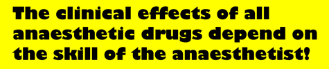

general anaesthesia = a state of unconsciousness with
lowered sensitivity to external stimuli.
local anaesthesia (analgesia) = blockade of peripheral
nerves.
regional anaesthesia (analgesia) = blockade of peripheral
nerves or the spinal cord supplying a larger area (using local anaesthetics).
neuroleptanalgesia = very deep sedation combined with
analgesia under which some surgery can be performed.
dissociative anaesthesia = a state in which an animal
is conscious but sensory input is dissociated from perception.
balanced anaesthesia = unconsciousness, analgesia and
muscle relaxation. This can be achieved by large doses of a single drug
or (preferably) small doses of different drugs.
Mechanism of action
Injection anaesthesia
Pharmacokinetics
Vaporisers
Minimum alveolar concentration
Drugs
Table of physical properties
Fish anaesthesia
Scavenging waste gases
A typical anaesthetic may involve:
The animal is then usually intubated (1.6MB movie)
ie. lots of drugs which interact!
General anaesthesia was first induced (in man) 150 years ago using ether, although nitrous oxide as an analgesic had been around for a while before. With ether in man, the patient goes through a (reasonably) predictable series of stages:
1) analgesia
2) excitement
3) surgical anaesthesiaplane 1)
plane 2)
plane 3)
plane 4)4) medullary paralysis
5) death
Stages 4 and 5 are to be avoided!
These are really only applicable to ether anaesthesia in man, although inducing
anaesthesia with an inhalation agent such as ether or halothane is rarely done
because of the excitement phase. Using combinations of drugs, as is routine
these days, will tend to alter progress through these stages.
